Overview
This project focused on ideas of path tracing breaking it down into five smaller parts. Part 1, Ray Generation and Scene Intersection, focuses on creating a camera ray and testing for intersection of rays and objects. Part 2, Bounding Volume Hierarchy, focuses on the creation of BVHs for us to figure out intersections of rays and objects Part 3, Direct Illumination, focuses on direct illumination as a way for us to render our scenes. Part 4, Global Illumination, focuses on global illumination as a way for us to render our scenes. Part 5, Adaptive Sampling, uses adapative sampling to create an image that eliminates the noise of using Monte Carlo sampling.
Part 1: Ray Generation and Intersection
Part 1 aims to create Rays and calculate Ray Intersections. In Task 1 we go about implementing the generate_ray
method which aims to take a normalized image coordinate (x, y) and outputs a ray in the world space. We achieve this by
transforming the image coordinates to camera space, generating the ray in camera space, and then transforming it into a ray in
world space. In order to do the translation to camera space we first calculate the translated position by taking the
original position and subtracting it by the translated origin point of Vector2D(0.5, 0.5). Using this we calclate the
camera space coordinates by creating the Vector3D in camera space:
Vector3D(translated_pos[0] * 2 * tan(hFov_rads * 0.5), translated_pos[1] * 2 * tan(vFov_rads * 0.5), -1) where
hFov_rads and vFov_rads are the hFov and vFov but in radians since the trig functions use radians.
We then transform the direction of the ray back into world space by first multiplying the calculated ray by c2w ,
the camera-to-world rotation matrix, and then normalizing. Finally we create a ray for the world space based on this transformed
direction vector and the pos, the camera position in the world space.
Task 2 asks us to simply generate num_samples camera rays and trace them throughout the scene.
After implementing Task 2 we were able to generate images such as the following.
Tasks 3 and 4 aim to calculate ray-primitive intersections. For the triangle intersection algorithm we check whether or
not a ray is intersecting a triangle object. To do this we implemented the Moller Trumbore Algorithm
(done by a helper function moller_trumbore_algo(const Ray &r)), referenced in Lecture 9 Slide 22
and Discussion 5. Within this algorithm we create 5 Vector3D objects. These objects represent the 2 edges of the triangle
involving p1 (e1, e2), the vector from the ray origin to p1 (s), the cross product of
the direction of the ray and e2 (s1), and the cross product of s and e1
(s2). Using these 5 vectors we then calcualte the resulting vector which is returned as follows:
(1.0 / dot(s1, e1)) * Vector3D(dot(s2, e2), dot(s1, s), dot(s2, r.d)). The resulting vector gives us a point of intersection at the 0th index
and the Barycentric coordinates of beta and gamma at the other indices. Using this resulting vector we can calculate the Barycentric
coordinate for alpha by doing 1 - beta - gamma and checking if the Barycentric coordinate is valid by ensuring that
all values are greater than or equal to zero and less than or equal to 1. Once we have verified the Barycentric coordinate we must then
check whether the intersection point is valid by making sure it is greater than or equal to 0 and the r.min_t as well
as it is less tahn or equal to the r.max_t. If any of these cases fail there is not an intersection. If a valid intersection has occured
we want to update the Intersection *isect object with the information of the intersection as well as updating
r.max_t to be the t at the intersection.
The sphere intersection algorithm is similar in that we first check to make sure that the ray and the Sphere object intersect.
Instead of using the Moller Trumbore Algorithm we can figure out if there is an intersection by solving a quadratic equation
using the dot product of the direction of r, the dot product of 2 times the distance between the ray origin and sphere origin
and the direction of r, and the dot product of the difference between the two origins subtracted by the radius squared. If the
resulting t is valid, then we have a valid intersection. After this, it is similar to the Triangle algorithm where we
want to update the Intersection object and the r.max_t.
After implementing Tasks 3 and 4 we can now render scenes with objects in them.
|
|

|
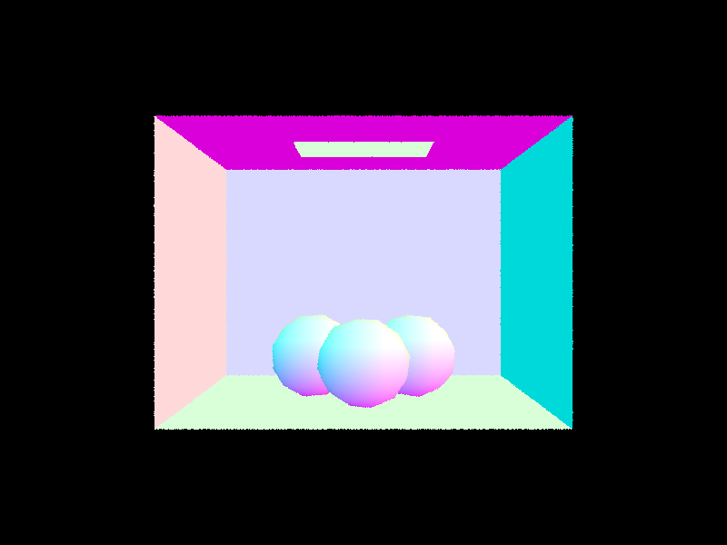
|
Part 2: Bounding Volume Hierarchy
With more complex geometries and scenes, there will inherently be more primitives, which means tracing rays and detecting intersections will be computationally expensive. In order to make ray tracing more efficient, a bounding volume hierarchy can be implemented to enable traversing the complex geometries and scenes faster.
In order to construct the BVH, I first determined the bounding box for the overall scene.
I did this by utilizing the primitive iterators start and end.
I created a variable bbox to represent the overall scene's bounding box, and then while iterating over each primitive, I would expand bbox with the bounding box of the current primitive.
Second, I would check whether the node being created should be a leaf or an interior node. I created a new node node which would have its fields populated according to whether it is a leaf node or an interior node.
Specifically, if the number of primitives provided by the given iterators (start and end) was less than or equal to max_leaf_size, then I would create a new leaf node.
When creating a new leaf node, I set node->start to the provided iterator start, node->end to the provided iterator end, node->l and node->l to NULL.
In the event that the the number of primitives was more than max_leaf_size, I would create an interior node.
When creating a new interior node, I set node->start and node->end to NULL, since an interior node does not contain reference to primitives.
However, I set node->l and node->r by invoking a recursive call to resolve each respective child node.
I calculate the mean centroid of all the provided primitives and calculate the longest axis to divide on in order to divide the given primitives between the left and right child of the interior node.
In particular, I calculated the longest axis to divide on by choosing the axis/dimension where bbox.extent was the largest.
I leveraged std::max_element(...) to return the index of the largest element in bbox.extent, where 0 corresponded to the x-axis, 1 corresponded to the y-axis, and 2 corresponded to the z-axis.
Now, I needed to organize the underlying data given by the provided iterators such that I could pass them into the recursive calls to resolve the left and right children of this interior node.
I leveraged std::partition(...) and a helper lambda I created which would organize the primitives based on a pivot value.
The pivot value was determined by indexing into bbox.extent using the index corresponding to the axis being split on.
Now, I created a new iterator variable mid which would be used to define the ending iterator for the left child's recursive call and the starting iterator for the right child's recursive call.
Before invoking the recursive calls, I also ensured that the left and right groupings had at least 1 primitive (this is done to ensure that infinite recursion and an eventual segfault are avoided).
If there was a scenario where either group did not have a primitve, I would either increment or decrement mid in order to allocate one primitve to the other group.
Finally, I set node->l = construct_bvh(start, mid, max_leaf_size); and node->r = construct_bvh(mid, end, max_leaf_size);.
The following are images with normal shading for a few large .dae files that could only render with acceleration due to the high number of triangles contained within the image.
|
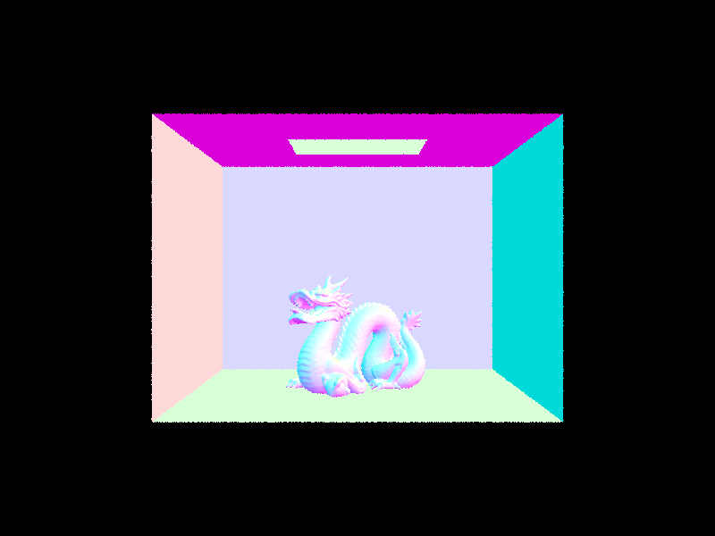
|
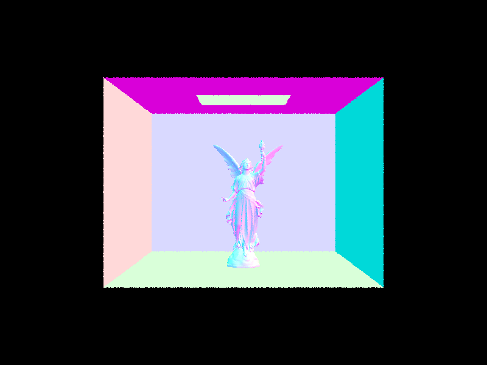
|
|
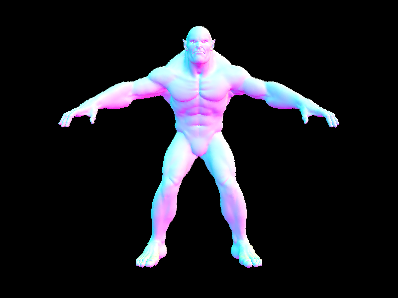
|
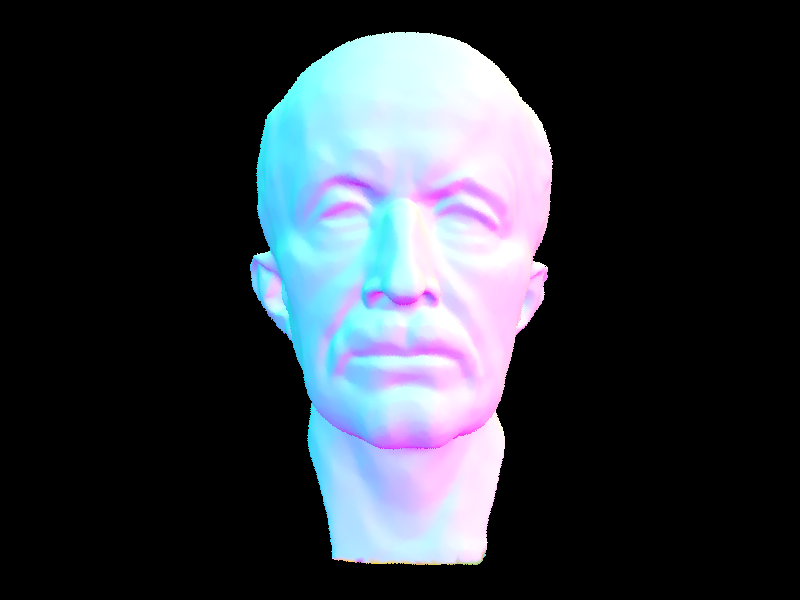
|
In order to understand how BVH acceleration helped to speed up our renderings we tested on 3 different meshes,
dae/meshedit/beetle.dae, dae/meshedit/cow.dae, dae/meshedit/teapot.dae. For all 3 of these scenes it was possible to render without
BVH acceleration but we saw a huge speed up once we implemented BVH. For the beetle scene we went from a rendering time of 33.2014 seconds to a
time of 0.1269 seconds. For the cow we went from a speed up of 30.5637 sec to 0.198 sec. Finally for the
teapot we went from 10.8 sec to 0.2301 sec.
Overall, based on the BVH acceleration statistics it can be seen that leveraging the BVH will be extremely useful when checking ray intersections when tracing rays.
While the introduction of BVH meant that we would need to build the BVH before we could render the image, the trade time it takes to create the
BVH is much smaller than the time saved by using BVH Acceleration for the rendering.
Specifically, the use of a BVH reduces the ray intersection complexity from O(n) to O(log(n)).
Part 3: Direct Illumination
Part 3 aims to implement two versions of the direct lighting function, uniform hemisphere sampling and importance light sampling.
Here are some images rendered using the two different lighting functions.
|
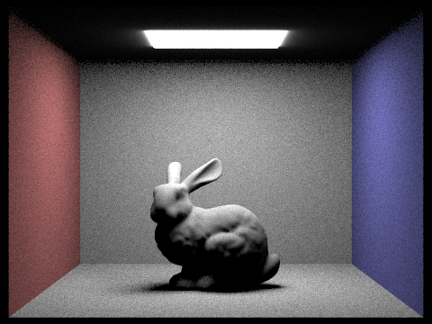
|
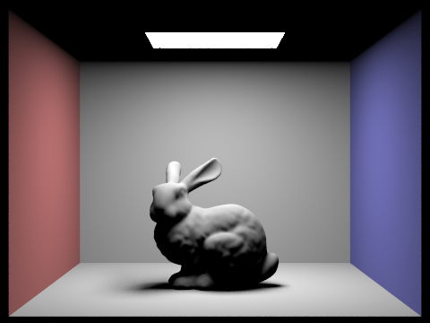
|
|
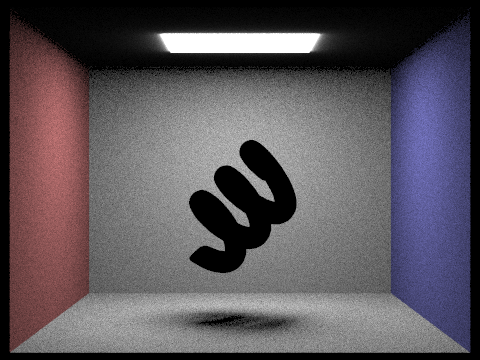
|
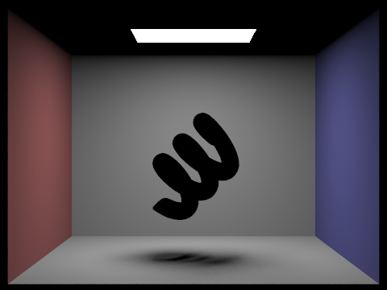
|
|
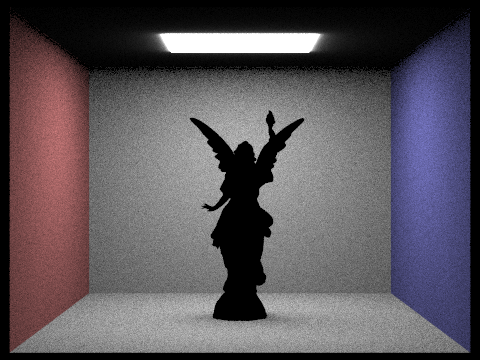
|
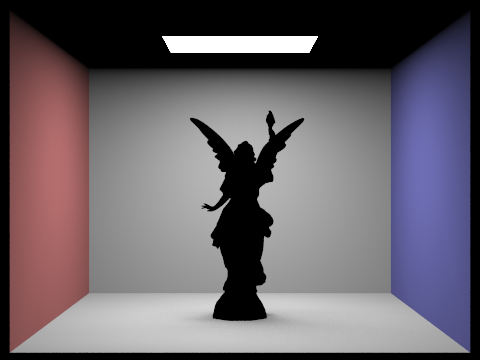
|
We can analyze the affect of the number of light rays on the noise levels in soft shadows by looking at the rendering of dae/sky/dragon.dae. The images are rendered with 1, 4, 16, and 64 light rays and 1 sample per pixel. As we can see from the different images, by increasing our number of light rays we are able to decrease the amount of noise in the shadows.
|
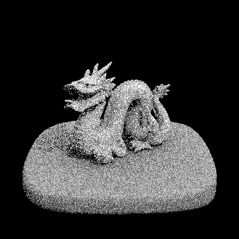
|
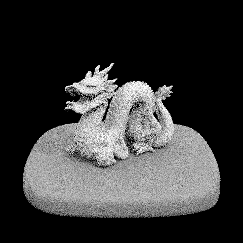
|
|
|
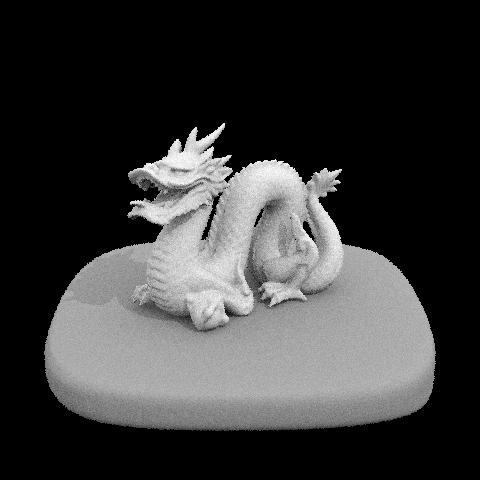
|
Part 4: Global Illumination
Part 5: Adaptive Sampling
In the previous part, Monte Carlo path tracing was implemented in order to generate the realistic images.
However, there is a significant amount of noise can be generated using that approach, which could actually be mitigated by increasing the number of samples used per pixel.
While in theory such an approach would suffice, it is worth noting that every pixel does not converge at the same rate.
Therefore, in this section I implemented adaptive sampling to concentrate sampling in more difficult regions of the image, by gathering statistics for a pixel's current sampling in order to determine whether the pixel has converged.
If a pixel has converged, then there is no need to continue sampling until the fixed (high) number of samples is reached -- the pixel's radiance can be set immediately after convergence.
In order to implement adaptive sampling, I updated the raytrace_pixel(...) method to incorporate a convergence check to evaluate whether the current pixel in question has converged or not.
At a high level, I tracked the mean and standard deviation of the current n traced samples through a pixel (n represents the number of samples taken until the pixel has converged):
$$\mu = \frac{s_1}{n}$$
$$\sigma^2 = \frac{1}{n - 1}(s_2 - \frac{s_1^2}{n})$$
I used two variables s1 and s2 to accumulate every sample's illuminance in order to calculate μ and σ:
$$s_1 = \sum_{k=1}^{n} x_k$$
$$s_2 = \sum_{k=1}^{n} x_k^2$$
Using the mean and the standard deviation, I can be calculated for the convergence check:
$$ I = 1.96 (\frac{\sigma}{\sqrt{n}})$$
A pixel will be considered convereged when I <= maxTolerance * μ.
When a pixel is converged, there is no longer a need to gather more samples for the pixel, therefore the sampleBuffer and sampleCountBuffer can be updated accordingly.
Within my code, I initialized float s1, float s2, and size_t samples_taken in order to implement adaptive sampling.
s1 and s2 are as defined above, where they will accumulate the scene radiance's illumination and the illumination squared.
Within the main for-loop in raytrace_pixel(...) I added a check to see if a batch of samples have been processed ( if (samples_taken > 0 && samples_taken % samplesPerBatch == 0)).
I added the samples_taken > 0 condition to the check in order to ensure that on the first iteration (when samples_taken = 0), I do not erroneously divide by zero when evaluating the statistics and checking the cut-off condition.
Moreover, I only checked the cut-off statistic for once a batch of samples were processed, which was defined via samplesPerBatch. Only checking the pixel's convergence once a batch of samples have been processed helps reduce the need to compute I and evaluate the cut-off for every pixel sample.
If the pixel has converged, then I updated sampleBuffer such that the pixel gets the average illuminance across the samples that were taken: sampleBuffer.update_pixel(aggregate_scene_radiance / samples_taken, x, y);.
I also ensured that sampleCountBuffer was updated repsectively to reflect the number of samples taken for the pixel: sampleCountBuffer[x + y * sampleBuffer.w] = samples_taken;
This part was straightforward to implement, therefore I did not run into any eventful debugging scenarios.
todo: add images
Project Webpage Link
Project 3-1 Webpage
https://cal-cs184-student.github.io/sp22-project-webpages-Seans1337/proj3-1/index.html